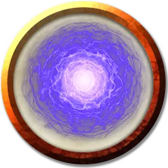

Гингватзим
Gingwatzim
Маленькая Аберрация (Перевёртыш)

Класс Доспеха 12
Хиты 39 (6к6 + 18)
Скорость 30 футов, летая 30 футов (парит)(только в своей истинной форме)
| мод | спас | ||
|---|---|---|---|
| СИЛ | 3 | −4 | −4 |
| ЛОВ | 15 | +2 | +2 |
| ТЕЛ | 16 | +3 | +3 |
| мод | спас | ||
|---|---|---|---|
| ИНТ | 4 | −3 | −3 |
| МДР | 11 | +0 | +0 |
| ХАР | 6 | −2 | −2 |
Иммунитет к урону яд
Иммунитет к состояниям отравление
Чувства слепое зрение 60 футов (слеп за его пределами), пассивное Восприятие 10
Языки Телепатия 60 фт.
Опасность 2 (450 опыта)
Бонус мастерства +2
Особенности
Иные формы. У гингватзима две формы кроме истинной, и обе выбираются его создателем при творении гингватзима. Одна из форм — точная копия немагического предмета Крошечного размера (например, книга, кинжал или драгоценный камень), который его создатель носит или несёт при вызове гингватзима. Другой формой может быть любой зверь Крошечного размера. После выбора формы нельзя изменить .
Действия
Высасывание энергии (только в истинной форме). Рукопашная атака оружием: +4 к попаданию, досягаемость 5 фт, одно существо. Попадание: 16 (4к6 + 2) урона некротической энергией, и цель должна преуспеть в спасброске Телосложения Сл 12, иначе получит 1 степень истощения. Когда цель завершает короткий или продолжительный отдых, она избавляется от всех степеней истощения, полученных от этой атаки.
Смена формы. Гингватзим трансформируется из своей истинной формы (сфера светящейся эктоплазмы диаметром 3 фута) в одну из двух своих альтернативных форм, или обратно из альтернативной формы в истинную.
В форме предмета он не может двигаться или совершать атаки, но в остальном сохраняет свои характеристики и неотличим от имитируемого объекта. В форме зверя гингватзим сохраняет свои хиты, но в остальном использует характеристики копируемого им зверя. В случае гибели гингватзим возвращается к своей истинной форме, после чего исчезает.
Описание
Гингватзим — это созданная заклинанием или ритуалом своеобразная форма жизни. Порождающая его магия черпает духовную энергию с Эфирного Плана, придавая гингватзиму его истинную форму — светящуюся (не слишком ярко) сферу эктоплазмы примерно 3 футов в диаметре. Только что сформированный гингватзим появляется как можно ближе к своему создателю и беспрекословно следует его командам, используя для общения телепатию.
Гингватзим может также принимать две другие формы, которые определяются его создателем в момент возникновения гингватзима. Одна — это точная копия немагического предмета Крошечного размера, который носит или несёт его создатель. Другая форма гингватзима — это зверь Крошечного размера.